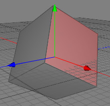
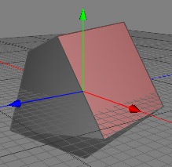

Normal Rotate Tool
The normal rotate tool can be used to rotate a polygon around it's normal. Be careful with multi-polygon selections because the result probably won't be what you expected.
 
Modes
The normal rotate tool can only be applied to raw polygon objects.

To perform a normal rotate, just select the polygons you want to rotate with the select tool. Now choose the normal rotate tool with the menu command "Tools PolygonNormal Rotate" or a hotkey. You can now drag and drop your selected polygons around their normals within the 3D view. Release the mouse button to finish the operation.
PolygonNormal Rotate" or a hotkey. You can now drag and drop your selected polygons around their normals within the 3D view. Release the mouse button to finish the operation.
Keys
- none
Properties
- none